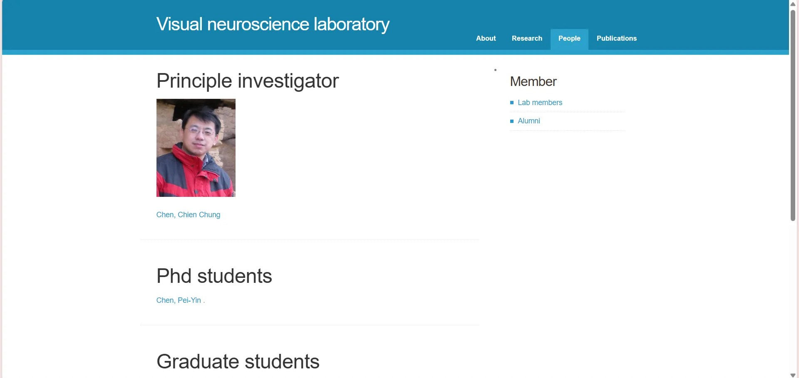
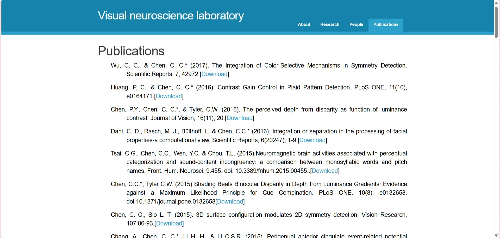

個人簡介和申請動機
我在台大心理系完成了大學及研究所的學業，研究領域是人類的初階視覺系統。不過在研究所後期的階段我才後知後覺地發現，自己並不想一輩子做視覺研究，應該要另尋出路。於是我開始接觸一直很有興趣的美術設計工作，在課業之餘接一些案子。畢業後，我留在實驗室擔任研究助理，工作之餘繼續自學和接案，但因為美術設計薪水和前景都不樂觀，我一直對這個選擇存疑，難以全心投入。去年年底，我在煩惱下向老闆（研究所的指導教授）尋求意見，他建議我可以結合研究專長與美術經驗，嘗試UI/UX相關的工作，在這之後，我開始轉換自學的方向。原先想往研究或設計發展，只計畫學習前端工程的基礎，但在上完彭彭老師的前端基礎課程後覺得意猶未盡，又找了進階的CSS、JavaScript課程來精進。學到一定程度後，我開始想寫簡單的工具來解決日常問題，這些過程給我極大的成就感，也讓我確信自己更希望成為的是工程師。後來我從彭彭老師的YouTube頻道發現這個bootcamp，看了訓練規劃後，深感自己還非常不足。我已經邊工作邊自學了一段時間，雖然一直有在慢慢進步，但和具備實踐能力的工程師還有一段不小的差距，而這個bootcamp是一個很好的機會。這樣的想法在我看過第五屆同學的作品發表會之後更加強烈，我非常希望能全心投入這個訓練，幫助自己進步，和學員們一樣有能力做出驚豔的作品，給自己信心去求職，並加入一個共同學習的社群，在這個領域不斷精進自己。
曾經做過哪些軟體工程技術相關的學習？若有作品請分享給我們
大學時我曾修過「心理與神經資訊學」，是一門引導我們使用資訊技術進行心理學實驗或研究的課。我學到如何使用最基本的HTML、JavaScript來撰寫網路實驗，在瀏覽器上呈現刺激，收集受試者反應。也有學習如何使用Python在網路上蒐集（爬蟲）、分析資料，以及進行非常簡單的機器學習。
研究所時期多使用Matlab，除了設計、撰寫、執行實驗程式外，也會使用它來進行資料的初步整理與分析。
最初開始學習前端工程時，我是觀看彭彭老師的Youtube教學；後來我進一步在Udemy上學習了進階的CSS及JavaScript，以下是至今為止我跟著課程老師
Jonas Schmedtmann做出的一些成品：
CSS:
在上網路課程的同時，我也試著練習寫程式來解決生活中的小問題。例如我經常使用的外國電子書平台，偶爾會推出高回饋率的購書活動，為了充分利用這項優惠，並且減少跨國付款所需的手續費，我寫了一個簡單的介面，在輸入想要購買的書籍價格、數量及回饋率後，程式會替我計算「最佳的購買順序」：在第一次結帳時完成唯一一次付款，之後僅依靠每次購買獲得的回饋金來購入清單中所有的書籍；但若此購書清單所能得到的回饋金總額太少，無法滿足這個條件，程式仍會給出一個能最有效利用回饋金的購買順序：BW Calculator↗
另外，我也慢慢將所屬實驗室許久未更新的
舊網頁
舊版網頁的People及Publication頁面


重新設計並寫出一個新的網頁：VNL|Visual Neuroscience Laboratory↗
如果參與這個訓練，會怎麼安排學習時間？
目前的正職工作（研究助理），我已經確定會在2025年1月底離職。雖然訓練在1月初就開始，但這份工作有一定的彈性，我可以和雇主協調出勤時間，確保自己能參加每週一早上10:00-12:00的線上會議。第一階段前半的內容我已有一定基礎，預期需要花費的時間不會太多，可以與工作並行，在下班後花2-3小時或利用周末來完成每周任務。
從2月開始我就能全職投入訓練。我預計會在平日每天花8-9小時的時間進行。在週一的線上會議釐清任務內容後，於下午先進行簡單的探索，規劃接下來一周的進度。週二至週五的9:00-12:00進行必要的研究、進修，13:00-18:00盡可能去推進每周任務進度，一天的工作結束後，檢視進度是否達成來調整規劃，若有必要也會在晚間或周末加班。
軟體技術日新月異，如何確定選擇投入的領域是正確有回報的？
我認為最重要、也是最困難的是，在投入前，必須釐清自己的目標及需求。尤其是在想要投入較為陌生或新穎的領域時，很容易誤判目標訂定的方向及難易程度，除了直接詢問身邊有經驗的前輩尋求建議之外，網路上也有很多管道可以得到其他專業人士的想法；如果一開始真的沒有頭緒，能幫助我們整理資訊的AI工具（如ChatGPT）也是不錯的參考來源。根據這些資訊，我們可以規劃一個短期能達成的目標來執行並回顧。目標的設立可以幫助我們判斷這段時間的投入的方向是否正確，訂定時限的同時也設立了停損點，避免投入了過多才發現走錯路，所以在規畫目標及時限的時候，除了自身的能力外，也要考慮自己能承受的風險。
請描述一件產生明顯負面情緒的經歷，如何處理該情緒？
第一次接到比較正式的logo設計委託時，我設計logo的經驗還不多，委託方的要求也有點難達成，我在花費了不少時間蒐集靈感及相關資料後，好不容易完成了一個十分滿意的設計。交給接洽人後也得到了他的正面反饋，當我以為一切順利時，幾天後卻收到了「委託方很不喜歡這個設計」的回覆，並詳細附上了他們對這個設計不滿的地方。
收到回覆的當下我很震驚，因為跟我預想的反應背道而馳。在閱讀委託方附註的不滿時，震驚的情緒漸漸轉為生氣，我一方面在心裡一一提出反駁，另一方面卻也不得不承認對方指出的問題確實存在，這使我在生氣之餘也對自己失去了信心，覺得自己被很用力地否定了。不過當我開始思考如何回覆對方時，發現自己想的都是怎麼提出反駁比較有禮貌，這樣的回覆對自己和委託方完全沒有幫助。它並不是我用來表現自己的作品，而是一個需要滿足委託方要求的產品，但我的負面情緒讓我沒辦法好好修正它的問題。於是我決定讓自己冷靜一下，先去聽著喜歡的音樂運動一下再洗個澡；平靜下來之後，為了不讓情緒再次被影響，我將那則回覆複製了一份，把裡面關於個人喜好的詞彙都刪除，只留下客觀的描述，這樣一來，這些我原本認為不友善的反對意見就成為了明確的修改目標。之後，我順利將原本的設計修改出幾個不同版本，最終也完成了讓對方滿意的logo。
關於這份申請網頁，分享一個開發時的技術心得
我在網路上尋找CSS的popover範例時，意外發現有人利用before/after
這兩種pseudo elements的
border
屬性來畫出不同方向的三角箭號。以我在作品集部分使用的左箭號為例，我使用了下列程式碼：
list__detail::before {
content: "";
position: absolute;
border-style: solid;
border-color: transparent #cbbbad transparent transparent;
//將三個邊隱藏，只留下右側的邊(一個向左的三角)
border-width: 10px 10px 10px 0;
//調整三角的大小。
}
使用這種方式畫出來的箭號可以根據自己的需求調整顏色及大小，再用transform: translate(x, y);調整相對位置：
- 可以指向右邊
- 左上
- 可大
- 可小
過去想要使用三角箭號時，我會使用符號（▲）或是圖片，但前者很常遇到不同裝置間無法正常顯示的問題，後者則是修改起來十分麻煩，這個方法相對來說會更穩定也方便。
如何看待自身工作和整個社會群體的連結關係？
我覺得這段連結是一種供需關係。現代社會中，我們仰賴他人工作的成果生存，這份連結使社會的需求從我們的供給得到滿足，而我們藉由工作滿足他人需求的同時，也能從中獲取、滿足自己不同層面的需求。一個人能從工作中獲得的，不只是能滿足個人生理及安全需求的薪資，還有能滿足我社會需求的團隊歸屬感、滿足自我實現的成就感等等。
其他想要對我們說的事情？
首先想跟你們說聲謝謝。bootcamp的頁面說明十分清楚，讀起來很輕鬆，看完也很清楚想要申請應該做什麼。製作頁面回答這些問題的過程，除了是一次很好的練習外，也幫助我能再一次從各個方面思考若要全力投入這個領域，自己還有哪裡可能需要加強。最後，感謝你們看到這裡，辛苦了🫡